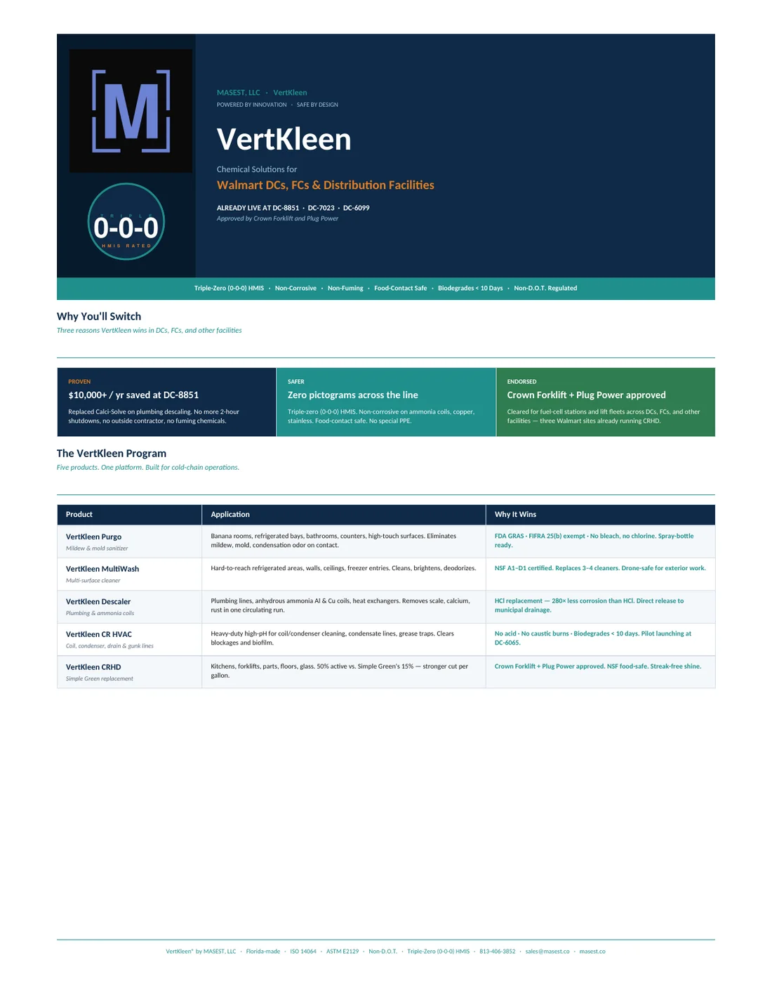
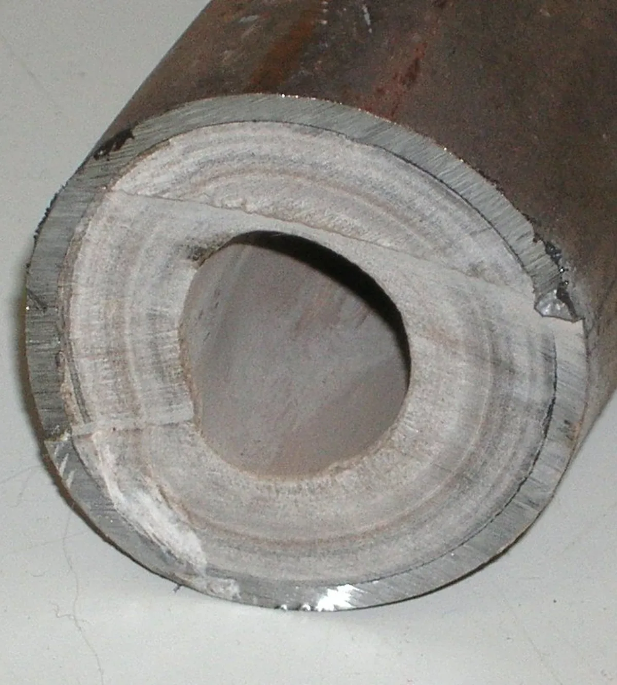
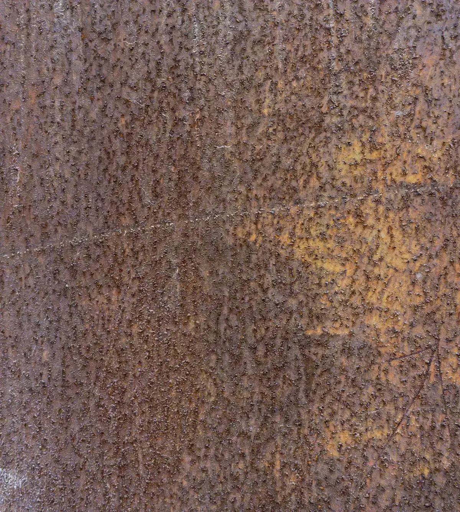
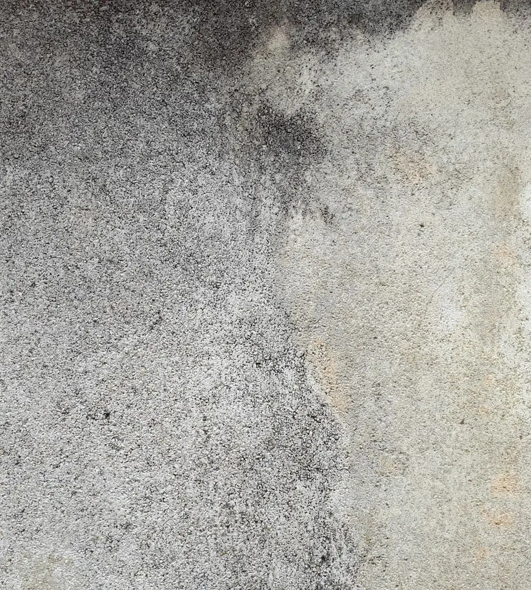
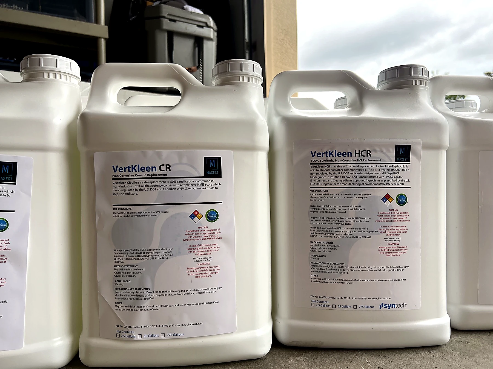
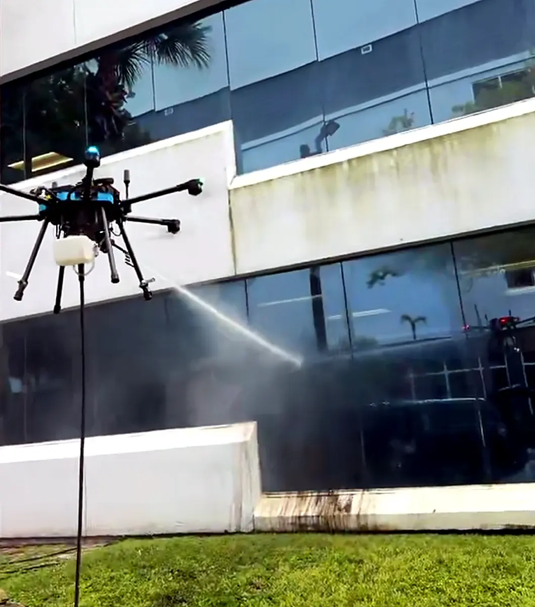

Distribution
Walmart distribution centers
CRHD positioned as a lower-hazard industrial degreaser replacement for high-traffic DC and FC cleaning programs.



Scale chokes heat transfer. Rust eats steel. Grease feeds fire risk. Bacteria waits in warm water. The cleanup should not become the next problem.
Minerals crystallize into scale. Steel oxidizes into rust. Grease films harden. Biofilm spreads, creating the living layer that shelters Legionella. Every layer taxes energy, capacity, and the people sent in to fix it.
Crews fight buildup with acids, caustics, and biocides. Every one carries a hazard label. Three numbers, 0 to 4. Watch how high they run.
The legacy move is hydrochloric acid: fast on mineral scale, harsh on skin, metal, and wiring.
Caustic soda cuts fat by turning it into soap. On skin, it keeps reacting until fully rinsed.
Biocides like glutaraldehyde knock back biofilm and the Legionella inside it, with inhalation and handling risk.
Chlorinated solvents strip oil and carbon fast, then linger as toxic vapor that's hard to ventilate.
Most legacy answers land at 3 for health: serious injury is possible after brief exposure.
Then move the core line to zero, with exceptions clearly footnoted.
VertKleen replaces the legacy step with HMIS 0-0-0 chemistry across the core line: less fume burden, simpler handling, and a cleaner buyer file for occupied sites.


VertKleen maps to the acid, caustic, degreasing, and water-treatment functions buyers already specify, then brings the handling profile down across the core line.
| The job | Conventional chemistry | Hazard | VertKleen equal | Hazard |
|---|---|---|---|---|
| Acid cleaning & passivation | Hydrochloric and inhibited acids | 3‑0‑1 | VertKleen HCR | 0‑0‑0 |
| pH control & caustic | Caustic soda, sodium hydroxide | 3‑0‑1 | VertKleen CR | 0‑0‑0 |
| Degreasing | Caustic and solvent degreasers | 2‑1‑0 | VertKleen Neutral | 0‑0‑0 |
| Scale & corrosion inhibitor | Phosphate, zinc, molybdate blends | 2‑0‑0 | WaterSafe60 | 0‑0‑0 |
| Oxidizing biocide | Stabilized bromine, bleach | 3‑0‑1 | Purgo | 0‑0‑0 |
| Non-oxidizing biocide | Glutaraldehyde 50%, flammable and toxic | 3‑2‑0 | DBNPA Tablet Program component |
Low |
HMIS scores hazard from 0 (none) to 4 (severe) across health, flammability, and reactivity. Ratings vary by manufacturer and concentration; typical SDS values are shown. The canonical VertKleen product roster uses the 0-0-0 story; DBNPA is a separate low-hazard program component for the non-oxidizing biocide function.
Clean, passivate, and service with the building occupied. Less fume burden, lighter handling, and fewer reasons to turn maintenance into an event.
HMIS 0-0-0 handling profileNo DOT hazmat freight on the core line, fewer acid-cabinet workflows, simpler SDS review, and fewer HazCom headaches to explain upstream.
Lower-friction shipping profileNo heavy-metal inhibitor program to explain, and fewer neutralizer-waste conversations. NSF/ANSI 60 and ASHRAE 188 support route with the right scope.
Biodegrades in under 10 daysName the chemical in use today. MASEST will map the VertKleen equivalent, proof file, and approval path.
SynTech-powered replacements for hydrochloric, phosphoric, and sulfuric acids. Descale, derust, and passivate with an HMIS 0-0-0 handling profile.
Browse acid replacementsNSF/ANSI 60 replacements for sodium and potassium hydroxide, plus neutral-pH degreasing for sensitive surfaces and seals.
Browse alkaline replacementsEach product is tied to a legacy chemical, documented application, and controlled document path.

Distribution centers, breweries, building exteriors, HVAC systems, and maintenance crews using VertKleen where the work was real and the equipment mattered.

CRHD positioned as a lower-hazard industrial degreaser replacement for high-traffic DC and FC cleaning programs.
CR and HCR trial material documents brewery tanks, heat exchangers, and CIP/SIP cleaning workflows.

MultiWash proof assets show exterior scale, algae, and grime removal on occupied property maintenance work.
Drilling rigs and pipeline terminals
Cruise ship and vessel operations
Equipment, concrete, and site maintenance
SAM.gov registered, procurement-ready
Cooling towers and Legionella programs
Occupied-campus cleaning programs
Aluminum extrusion and processing
Breweries, distilleries, and restaurants
List the chemical, surface, soil, system, and the reason it remains in use.
We map the VertKleen equivalent, then attach the proof, application notes, and document route.
Request a quote, trial, or distributor route. The right product moves faster when the buyer file is already in order.
Send the current product, the job it does, and the site. MASEST will return the replacement path, quote route, and proof file.